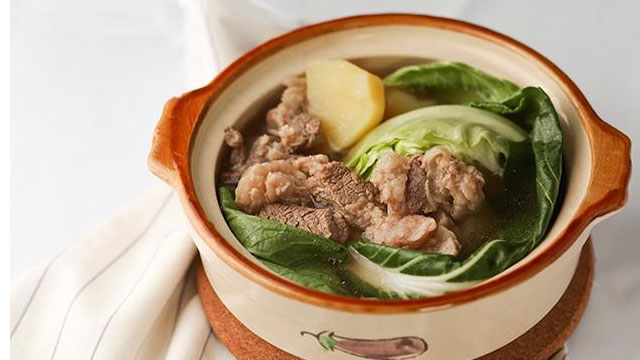

Beef Nilaga

Description
This is another one-meal-in-a-pot dish. It contains soup, meat and vegetables all cooked together in one delicious broth. Terrific during cooler weather. Serve hot alone or with rice.
Ingredients
- 2 lbs beef brisket cubed
- 1 big potato cuved
- 1 bok choy or pechay
- 2 medium sized carrots chopped crosswise (w/ length of about 2 inches)
- 1 tbsp whole pepper corn
- 3 tbps fish sauce